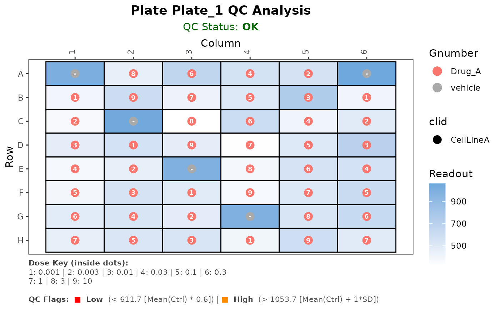
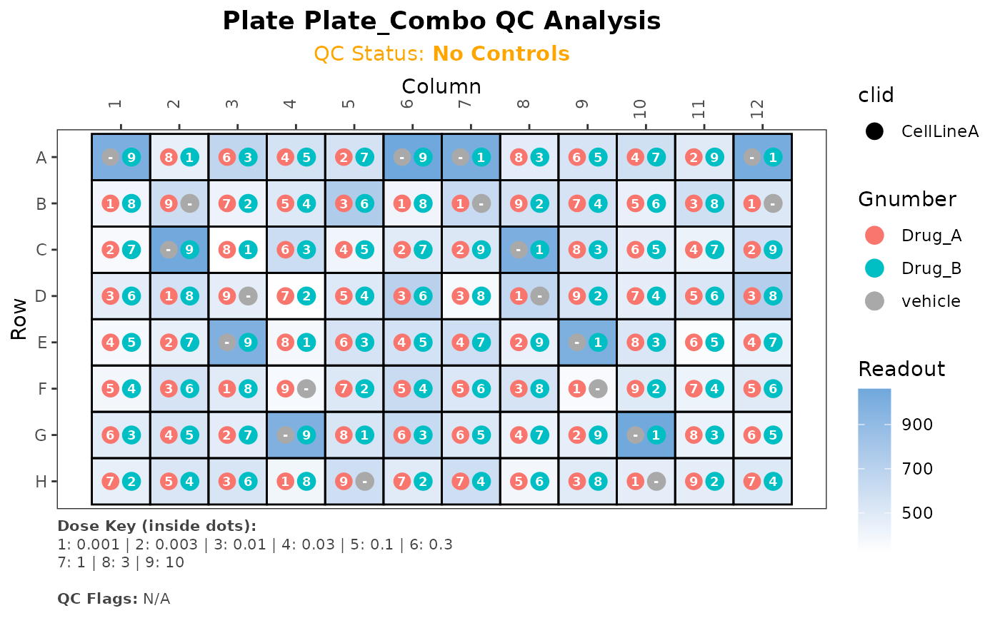

Plot plate data (Heatmap + Dose Ranks + Smart Legend + Explicit QC)
plot_plate_stack_info.RdPlot plate data (Heatmap + Dose Ranks + Smart Legend + Explicit QC)
Usage
plot_plate_stack_info(
dt_plate,
ctrl_fail_threshold = 0.6,
n_sd = 1,
use_sd_threshold = TRUE,
items_per_line = 6
)Arguments
- dt_plate
data.table. Input data containing plate layout, measurements, and standard gDR identifiers.- ctrl_fail_threshold
numeric(Default: 0.6). Flags control wells with a readout belowMean(Controls) * ctrl_fail_threshold.- n_sd
numeric(Default: 1). Sets the upper limit for flagging high signals using the formulaMean(Controls) + (n_sd * SD(Controls)).- use_sd_threshold
logical(Default: TRUE). IfTRUE, uses the dynamic SD-based limit defined byn_sd. IfFALSE, uses a fixed limit ofMean(Controls) * 1.1.- items_per_line
integer. Number of doses to show per line in the legend. Default 6.
Author
Bartosz Czech czech.bartosz@external.gene.com
Examples
conc_series <- c(0, 0.001, 0.003, 0.01, 0.03, 0.1, 0.3, 1, 3, 10)
test_data <- data.table::data.table(
WellColumn = sprintf("%02d", rep(1:12, each = 8)),
WellRow = rep(LETTERS[1:8], times = 12),
Barcode = rep(c("Plate_1", "Plate_2"), each = 48),
clid = "CellLineA"
)
invisible(test_data[, Concentration := rep(rep(conc_series, length.out = 48), 2)])
invisible(test_data[, Gnumber := ifelse(Concentration == 0, "vehicle", "Drug_A")])
invisible(test_data[Gnumber == "vehicle", Concentration := 0])
invisible(test_data[, ReadoutValue := ifelse(Gnumber == "vehicle",
rnorm(.N, 1000, 50),
rnorm(.N, 500, 100))])
library(ggtext)
plots <- plot_plate_stack_info(test_data)
plots[[1]]

combo_data <- data.table::copy(test_data)
invisible(combo_data[, Barcode := "Plate_Combo"])
invisible(combo_data[, Concentration_2 := rep(rev(conc_series), length.out = .N)])
invisible(combo_data[, Gnumber_2 := ifelse(Concentration_2 == 0, "vehicle", "Drug_B")])
invisible(combo_data[Gnumber_2 == "vehicle", Concentration_2 := 0])
combo_plots <- plot_plate_stack_info(combo_data)
combo_plots[[1]]
